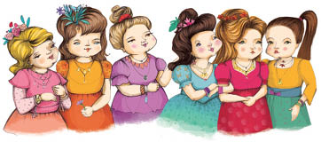

Bir tüccarın kızı olan Tarhun, ablalarına hiç benzemiyordu. Fereng, Sultan, Mahsan, Begüm, Moluk ve Anka’nın, yani tüccarın öbür altı kızının her birinin ayrı bir şımarıklığı, çeşit çeşit istekleri vardı. Bazen, onların gürültülerini, oyunlarını duyan mahallenin erkek çocukları sokağa fırlarlardı. Tüccarın kızlarının neşeli kahkahaları bütün kasabanın dilindeydi. Herkes onların ne kadar güzel giyindiğini, ne kadar iştahlı olduğunu konuşuyordu. Mahallede oturanlar bu sevimli ve tombul kızlara bayılırlardı. Lacivert taşlı bir gerdanlığa bakıp bakıp tam bir hafta kıkır kıkır gülebilirlerdi kızlar, güneşin altında serilip yatarlar ya da mücevherlere bakarlardı. Zaman zaman, yemek yedikleri masanın yanı başında uyuyakalırlardı.
Tüccar, altı kızını evlendirmişti, damatları da tembeldiler, onlar da yiyip içip şişmanlıyorlardı. Damatlar eşlerinin yanından ayrılmıyor, onlarla birlikte eğleniyorlardı. Günde olsa olsa iki saat çalışıyorlardı, hem de ne çalışma! Damatlar, tüccarın dükkânlarını kontrol ediyor ve işleri ayarlıyorlardı. Sonra eve dönüyor, eşlerini yanlarına alıyor, günün geri kalanını gülerek ve eğlenerek geçiriyorlardı.
Tarhun, bütün bu olup bitenin ortasında kendisini meşgul edecek şeyler buluyordu, sanki çevresinde olanları hiç görmüyordu. Ya da belki görüyordu da görmezden geliyordu. Tarhun tombul değildi, sevimli ve güzeldi. Kızların en küçüğüydü. Tüccar babası ona uygun bir koca bulamıyordu. Tarhun her elbiseyi de giymezdi. Elbisesinin eteği kırışır ama o aldırmazdı. Ablaları onun eteğinin kırışıklığına bakar, nasıl olup da böyle giyinebildiğine şaşar kalırlardı.
Babası Tarhun’un kendisinden bir şey istediğini hatırlayamıyordu. Babası ne alırsa alsın Tarhun kabul ederdi. Ne itiraz ederdi, ne de teşekkür ederdi. Hiçbir şeyi önemsemez gibiydi. Hiçbir yere gitmez, hiç kimseyle konuşmazdı. Ona soru soran olursa, kısa yanıtlar vermekle yetinirdi. Gür siyah saçları, omuzlarından aşağı sırtına dökülürdü. Yürürken destanlardaki peri kızlarına benzerdi. Ona sövseler de, iltifat da etseler, alay da etseler ya da saygı da gösterseler ilgisiz kalırdı. Sanki bambaşka bir ülkeden gelmişti ya da beklentileri bütün bunlardan çok daha büyüktü.

Hayat böylece sürüp giderken büyük bir kutlama yapılacağı gün geldi. Kızlar, eğlence başlamadan günler öncesinden babalarından nasıl bir hediye isteyeceklerini düşünmeye başladılar. Sanki bu koca dünyada yapılacak bundan daha önemli bir şey yoktu. Her şeyi bir kenara bırakmışlar, bütün dikkatlerini tek bir şey üzerinde toplamışlardı: Nasıl bir hediye isteyeceklerdi? Ama şenlikler, Tarhun’u hiç mi hiç etkilemiyordu. Onun için şenlik günü öbür günlerden farksızdı. Aynı insanlar, aynı kasaba, tembel kızların ve eğlence düşkünü, tembel kocalarının yaşadığı aynı ev, aynı gökyüzü ve aynı toprak. Hatta her öğleden sonra çıkan ve insanların yüzünü gözünü toz toprakla dolduran rüzgâr bile aynıydı. Bunun böyle olduğunu tek bilen de Tarhun’du.
Şenliğe bir gün kala tüccar kızlarını yanına çağırdı, kente alışverişe gideceğini bildirdi, kızları da canları ne istiyorsa söylemelilerdi. İlk sözü en büyük kızı Fereng aldı. Ne zaman bir şey isteyecek olsa babasının dizlerine oturur, kollarını boynuna dolar, yanaklarını öper, sonra başını babasının omzuna dayar, göğsüne yaslanır, konuşmaya başlardı. Bu sefer de aynı şeyleri yaptı ve, “Ben bir banyo istiyorum, muslukları altından, duvarları ve zemini gümüşten olsun, musluklardan da gülsuyu aksın. Bugün öğleden sonra hazır olsun ki içine girip hemen yıkanabilelim,” dedi.
İkinci kızı Sultan hep babasının elini tutup kalbine bastırır, nedensiz yere ağlamaya başlardı. O da dedi ki: “Ben bir çift ayakkabıyla bir elbise istiyorum. Ayakkabımın bir teki gümüş, bir teki altın olsun. Elbisemin ipliklerinden biri gümüş, biri de altın olsun.”
Üçüncü kızı Mahsan yüzünü babasının yüzüne dayadı ve, “Ben bir tane siyah bir tane de beyaz hizmetçi istiyorum,” dedi. “Yatmaya gittiğimde siyah hizmetçim giysilerimi çıkarsın, sabah kalkınca da beyaz hizmetçim giydirsin.”
Dördüncü kızı Begüm, dudaklarını uzatıp babasını öptü ve, “Öyle bir gerdanlık istiyorum ki,” dedi, “geceleri pamuk helva kadar beyaz, gündüzleri mermer gibi siyah olsun. Tam altı kilometre uzağa kadar da pırıltısı görülsün.”
Beşinci kızı Moluk, eteğinin ucunu kaldırdı, “Ben bir çift ipek çorap istiyorum,” dedi. “Ta dizime kadar gelsin, çıkardığım zaman da bir yüksüğe sığacak kadar küçülsün.”
Her zaman ablalarını taklit eden altıncı kızı Anka, bu sefer de aynısını yaptı ve, “Öyle bir şey istiyorum ki, ben banyoya giderken benim uşağım olsun, bir düğüne giderken hizmetçim olsun ve ona ihtiyacım olmadığında da bir yüzük gibi parmağıma takabileyim,” dedi.
Tüccar, kızlarının söylediklerini dinledi, isteklerini ezberledi. Ama yedinci kızı Tarhun’un da bir şey istemesini boşuna bekledi. Tarhun onları seyretmekle yetiniyordu. Ya da belki de seyretmiyordu da seyredermiş gibi görünüyordu. Sonunda tüccar daha fazla dayanamadı ve “Kızım,” dedi, “benden senin için satın alabileceğim bir şey iste.” Kız başını öbür tarafa çevirdi. Tüccar yineledi: “Benden bir şey iste!”
Tarhun’un gözleri hiç olmadığı kadar parladı, hemen, “Ne istersem alacak mısın?” diye sordu. Alamayacağı bir şey olabileceğini aklına bile getirmeyen tüccar kendinden emin olarak, “Ne istersen alırım,” dedi. “Ablalarına aldığım gibi.” Tarhun, söyleyeceklerini herkes dinleyene kadar bekledi. İlk kez bir şey istiyordu. Sonra, masal perilerine birinin mutluluğu ve talihi için dua eder gibi fısıltıyla, “Bir yürek ve bir ciğer istiyorum,” dedi. Bunu sakin sakin ve yumuşak bir sesle söylemişti, söyler söylemez de ayağa kalkıp dışarı çıktı.

Ablalarıyla babası öylece kalakalmışlardı, sanki hiçbir şey duymamışlardı ve sanki Tarhun odadan çıkmamıştı. Sonunda tüccar kızının çıkıp gittiğini anladı, hem de hiçbir şey söylemeden. Hiçbiri onun sesini duymamıştı. Onun bir yürekle bir ciğer istediğini sadece Tarhun’un sağ tarafında oturan Anka duyabilmişti.
Yürekle ciğer ne işe yarayacaktı? Tüccarın evinde yeterince yiyecek yok muydu ki kızı yürekle ciğer dilemişti babasından? Babası Tarhun’un peşinden koştu. Ablaları ise kardeşleriyle dalga geçiyorlardı.
En büyük ablası Fereng kahkahalarını tutamadı ve, “Kardeşlerim, bir insanın hayatı boyunca hiçbir şey istememesi, sonra isteyince de yürekle ciğerden başka bir şey bulamaması komik değil mi? Üff, midem bulandı. Yürek ve ciğer, yürek ve ciğer... Gerçekten gülünç bu... hah hah ha...”
Kız bunları söylerken zevkten bayılacak gibiydi.
İkinci kız Sultan pencereden giren esinti tenine değip ferahlatsın diye yakasını açtı, ter içinde kalmıştı, “Yürekle ciğer,” dedi, “Anka, canım, böyle dediğini gerçekten duydun mu sen? Ne kadar saçma, hah hah ha... Kim bilir ne yapacak bunları...”
Sırtüstü yatmakta olan üçüncü kardeş Mahsan başını iki yana öyle bir salladı ki saçları yüzüne döküldü. “Kardeşlerim,” dedi, “ne kadar sabırlısınız da bu saçmalıklara dayanıyorsunuz. Bahse girerim ki zavallı eşlerimiz şimdi tek başlarına sıkıntıdan patlıyorlardır... Haydi yanlarına gidelim... Haydi, kalkın, onları yalnız bırakmayalım.”
Dördüncü kız kardeş Begüm de başını sallayarak onunla aynı fikirde olduğunu belli etti. Beşinci kardeş Moluk’la altıncı kardeş Anka da aynı şekilde katıldılar ona. Gitmek üzere hep birlikte ayağa kalktılar. Kapının eşiğinde babalarını gördüler. Adam kızlarına, “Tarhun başka bir şey istemiyor,” dedi. “Ona, kızım yüreği ne yapacaksın, diye sordum. O da bana bir yürek istiyorum, demekle yetindi. O zaman, peki, haydi yürek istemeni anladım diyelim, ciğer ne işine yarayacak? Öyle kanlı kanlı, dedim. Tarhun yine, istiyorum işte, diye fısıldadı. İstiyorum işte de ne demek? Siz de böyle bir şey istemenin saçma olduğunu düşünmüyor musunuz?”
Kızlar hep bir ağızdan, “Evet, baba,” dediler, “saçma bu. Baştan aşağı saçmalık. İyisi mi onu evlendir sen.”
Tüccar, “Evlenmek istemiyor; evlenmenin saçmalık olduğunu söylüyor, ama erkeklerle arkadaşlık edebilirmiş.”
Kızlar , “Eh, arkadaşlık etsin o zaman,” de-yip muzipçe gülüştüler. “Ne fark eder ki?” Sonra kahkahaları patlatıp birbirlerini çimdiklemeye başladılar.
Tüccar, “Tarhun diyor ki, onun gördüğü erkekler gerçek erkek değilmiş, sizin kocalarınız bile öyle değilmiş, hatta ben bile değilmişim...” dedi.
Kızlar inanmazlıkla, “Ne?” diye bağrıştılar, “Onların erkek olmadığını mı söylüyor? Erkek olmasalar neden evlenelim ki onlarla...”
Babaları, “Dışarıdan gördüklerimiz yetmez, diyor. Dış görünüş erkekliğin kanıtı değilmiş. Ben bir şey anlamadım. Siz anlıyor musunuz?”
Kızlar, “Saçmalık bu,” dediler. Sonra Mahsan söz aldı. “Kardeşlerim, güzel kafacıklarınızı böyle şeylerle yormamalısınız,” dedi. “Gelin eşlerimizin yanına gidelim, babam da pazara gidip bizim hediyelerimizi alsın. Haydi, gelin kardeşlerim.”
* * *
Tüccar, Fereng için banyoyu, Sultan için elbiseyle ayakkabıları ısmarladı. Mahsan için iki tane genç ve güzel köle satın aldı, Begüm için de pamuk helvadan daha beyaz, mermerden daha kara bir gerdanlık buldu. Moluk için de bir yüksüğün içine sığabilecek ipek çoraplar aldı, Anka için, hamama yıkanmaya giderken uşağa, düğünlere giderken yanına alacağı bir hizmetçiye dönüşen bir zümrüt yüzük buldu. En sonunda da en küçük kızı Tarhun’a istediği yürekle ciğeri satın almak istedi. Kendi kendine, “Bir dakika bile sürmez bu,” diye mırıldandı. Öteki siparişleri alırken epeyce zaman harcamıştı, tam bir saat sürmüştü alışverişi.
İlk önce yürek ve ciğer satıldığını hatırladığı küçük bir pazara gitti, ama yürek ve ciğer satan bir tek kasap dükkânı bile bulamadı. Dükkânların hepsinde artık ayna satılıyordu.
Bazı aynalara bakanlar kendilerini binlerce kişi gibi görüyorlardı, ufak tefek olanları iri yarı, çirkinleri güzel gösteriyordu bu aynalar, hatta yalanlar gerçek, kötüler iyi gibi görünüyordu. Herkes bayılıyordu bunlara. Tüccar kendi kendine, “Kızım neden böyle bir ayna istemedi ki sanki?” dedi. Eğer istemiş olsaydı adamcağız böyle bir ayna satın alır ve kızına götürürdü. Ne yazık ki istememişti kızı.
Tüccar tam iki saat boyunca pazaryerinde çaresizce, ne yapacağını bilmez halde dolaşıp yürek ve ciğer aradı. Dükkânların bazıları kapalıydı, kapılarında da kâğıtlar asılıydı. Bunların üzerinde çeşitli yazılar vardı: Sana Ne? Çek Git! Çok Beklersin! Bir Daha Sakın Böyle Bir Şeye Kalkışma!..
Tüccar hiçbir şey anlamamıştı. Birine, “Bunlar neden kapalı?” diye sordu. Aldığı yanıt, “Sana Ne?” oldu. Başka birine sordu: “Bu dükkânlar ne zaman açılacak?” “Çok Beklersin!” dedi adam. Üçüncü birine de sordu: “Bu beyefendiler neden böyle kaba yanıtlar veriyorlar bana? Ben onlara bir şey demedim ki!” Aldığı karşılık yüzüne inen bir tokat oldu. “Bir Daha Sakın Böyle Bir Şeye Kalkışma!” dedi adam.
Tüccar, böyle yanıtlar alacağını hiç düşünmemişti. Susup yoluna devam etti. Bir tanıdığına rastlayınca ona, “Arkadaşım, bu kentte yürek ve ciğer bulabileceğim bir yer var mı?” diye sordu.
Arkadaşı ona, deli görmüş gibi baktı, “Ne tuhaf şeyler arıyorsun sen!” deyip tüccarın yanından uzaklaştı. Tüccar şaşkın ve kafası karışmış halde oracıkta kaldı. Bir kasap dükkânının önünden geçerken kasaba, “Yürekleri ve ciğerleri ne yapıyorsun?” diye sordu. Kasap ona, “Sana ne?” dedi. Yeniden suratına tokat yemekten korkan tüccar bu işe daha fazla devam etmedi. Sormaya devam etseydi acaba yine tokat yer miydi? Tokat yedikten sonra da sormaya devam etseydi ne olurdu? Başına ne gelirdi? Tüccar, bu soruların yanıtını arayacak kadar yürekli ve açık görüşlü değildi.
Bütün kenti dolaştı ama hiçbir şey bulamadı. Öğleden sonra, yorgun ve bitkin bir durumda bir kahvehaneye gitti, biraz peynir-ekmek yedi, birkaç bardak çay içti ve yola koyuldu. Kızlarına ne söyleyeceğini düşünüyordu. Altı kızı istediklerini alacaklardı ama en küçük kardeşleri alamayacaktı, bu da çok kötüydü. Tüccar, kızının istediklerini bulamamıştı. O zaman şunu düşündü: Tarhun, kentte yürek ve ciğer bulunmayacağını biliyordu, oysa kendisi de altı kızı da bunu bilmiyorlardı. Bir kişi biliyordu, yedi kişi bilmiyordu. Peki, Tarhun nereden biliyordu? Bunun yanıtını da bilmiyordu tüccar. Adamcağız öyle yorulmuştu ki evine dönerken dinlenebilmek için bir meyve bahçesinin duvarının dibine oturdu. Tam oturmuştu ki, duvarın arkasından bir ses duydu: “Böylece her şey düzenlendi, geriye hiçbir yürek kalmadı. Ne satacak yürek var ne de satın alacak.”
“Hayır kızım. Öyle değil. Eğer daha dikkatle ararsan bulabilirsin.”
Tüccar bunu duyar duymaz ayağa fırladı, bahçenin içine göz attı ama tek gördüğü yavrularını besleyen beyaz bir tavşan oldu.
Tüccar aklını kaçırdığını düşündü. Hemen oradan uzaklaşmaya başladı ama sokağın sonuna gelince adımları yavaşladı. Evine elleri boş dönemezdi. Kızına ne derdi yoksa? Adamcağız kendini hiç bu kadar yetersiz hissetmemişti. Derinden iç geçirdi, sanki yürek ve ciğer bulacak gücüm olsaydı hiçbir sorun kalmazdı, der gibiydi. Ansızın, karşısına ateş, duman ve alevden oluşan bir şey çıktı. “Kimsin sen?” diye sordu ona. “Ben Cin’im,” diye bir yanıt geldi.
“Cin mi?” dedi tüccar.
“Evet,” dedi Cin, “dileğin nedir?”
“Yürek ve ciğer,” dedi tüccar.
“Bunlar bende var,” dedi Cin, “ama sana bir şartla veririm.”
Tüccar, küçücük Cin’e baktı. Böyle bir yaratığın konuşabileceğine ve yüreğiyle ciğerinin olabileceğine inanmakta zorluk çekiyordu. Sonunda, “Ne istersen yaparım,” dedi. Cin, ona, “Bana Tarhun’u ver!” dedi
“Hemen mi?” dedi tüccar.
“Hemen değil,” dedi Cin. “Canım ne zaman isterse o zaman gelip alacağım onu.”
“Tamam,” dedi tüccar, ama yaptığı bu anlaşmanın nasıl sonuçlar doğuracağını hiç düşünmemişti. Yürekle ciğeri alıp evine döndü.
Kızlar, babalarının düşüncesizlik edip kendilerini bu kadar çok bekletmesinden biraz rahatsız olmuşlardı ama hediyelerini görür görmez her şeyi unuttular, tek düşünceleri, eşlerinin yanına gidip bu yeni oyuncaklarıyla oynamaktı.
Akşam yemeği saati gelene kadar Tarhun’u hiçbir yerde bulamadılar. Damatlardan biri Tarhun’u öğle vakti evin avlusunun ortasındaki çok yüksek bir karaağaca tırmanırken görmüştü, görünce de pek şaşırmıştı, çünkü kendisi erkek olmasına rağmen aynı şeyi yapamazdı. O saatten sonra da Tarhun’u gören olmamıştı.
Hep birlikte akşam yemeğine oturduklarında Tarhun sessizce içeriye girdi, onun farkına ancak otururken vardılar. Tarhun babasına yürekle ciğeri bulup bulmadığını sormadı. Sanki bulamadığından pek emindi. Kızın neye inandığını, neye emin olduğunu anlamak hiç kolay değildi.
Tüccar, yürekle ciğeri bir tabağa koyup kızına uzattı. Tarhun tabağı alıp odadan çıktı. Birkaç dakika sonra tabağın kırıldığını duydular, Tarhun’un tekrar içeri girdiğini gördüler. Giysisinin yakası açılmıştı, iki göğsünün ortasında derin bir yara vardı. Hiç olmadığı kadar çevik adımlarla gidip camı açtı ve sokağa baktı.
Tüccar kızlarına kentte geçirdiği günü anlatıyordu. Sıra ayna satanlara gelince, keşke diye düşündü, kızlarımdan biri ayna istemiş olsaydı benden, sonra da içini çekti. Birden sokak kapısını biri tıklatınca Tarhun pencereden dışarı atladı. Tüccar dehşet içinde pencereye koştu. Hiç beklemediği bir şey gördü: Kızı kapıda uzun boylu, yakışıklı bir erkekle konuşuyordu. Tüccar hemen kapıya koştu. Kızları pencereye yanaşmışlar, birbirlerinin üzerine abanarak dışarıya bakıyorlar, kahkahalarla gülüyorlardı.
Genç adam, “Tarhun’u alıp götürmem için beni Cin yolladı,” dedi.
Tüccar, hikâyenin bu bölümünü Tarhun’a iki nedenden dolayı anlatmamıştı: İlk önce Tarhun’un üzüleceğinden korkmuştu, ikinci olarak da olanları anlatsa bile Tarhun’un ilgilenmeyeceğini düşünmüştü. Ama sanki Tarhun hikâyeyi biliyordu ve hiç etkilenmemiş gibiydi.
Tüccar, genç adama, “Bunu yapamam,” dedi. “Kızımı veremem.”
Genç adam son derece sakin, “Artık bu sizin elinizde değil,” dedi. “Yapılması gerek.” Sonra da tüccara, verdiği sözü ve Cin’in koşulunu hatırlattı.
Tüccar biraz yumuşadı, bir bahane bulmaya çalışarak, “Bir adamın kızını tanımadığı ve daha önce hiç görmediği birine vermesi sana da tuhaf gelmiyor mu?” diye sordu.
Genç adam, “Onun Tarhun’u tanıması yeterlidir,” dedi.
Tüccar Tarhun’a bakınca irkildi; onu hiç bu kadar neşeli ve canlı görmemişti. Tarhun başıyla kabul ettiğini belirten bir işaret yaptı. Tüccar sonunda ikna olmuştu. Genç adam beyaz atına atladı, Tarhun da arkasına binince genç adam atını dürtüp yola koyuldu. Tarhun genç adamın beline sarılmış, başını sırtına yaslamıştı, onu sıkı sıkı tutuyordu. Sanki onu ellerinden çekip almalarından korkar gibiydi.
At hızlandı, dörtnala koşmaya başladı.
Aylarca, yıllarca okyanusların, ateşlerin üstünden geçtiler; aylarca, yıllarca kana susamış canavarların bulunduğu vadileri aştılar; aylarca, yıllarca ter içinde kaldılar, buzdan ve ateşten dağlara tırmandılar, buzulların ve ateşlerin bulunduğu vadilere indiler. Aylarca ve yıllarca, her köşesinden, “Öldüreceğim, parçalayacağım!” diye haykıran seslerin duyulduğu karanlık ormanlardan geçtiler; aylarca ve yıllarca aç ve susuz kaldılar, aylarca ve yıllarca tuzaklar ve kapanlar çıktı önlerine, bunlara yakalanmamayı başardılar. Aylarca ve yıllarca yedi başlı, bin ayaklı ejderhalar peşlerini kovaladı, pis kokulu, alev saçan soluklarını üzerlerine üfledi, sonunda atın nallarından çıkan kıvılcımlar o ejderhaların gözünü kamaştırdı da genç adamla Tarhun onlardan kurtuldular. Doğuya doğru binlerce kilometre gittiler, batıya doğru binlerce kilometre gittiler, göklerinden ateşler yağan bin bir araziden geçtiler, ama bütün bunlar Tarhun’a göz açıp kapayıncaya kadar olmuş gibi geldi. Gözlerini açınca dört bir yanında meyve ağaçlarının sıralandığı yemyeşil bir bahçede buldu kendini. O dakikadan sonra meyve bahçesi de, genç adam da Tarhun’un oldu. Şimdi Tarhun sadece çevresine bakmıyor, gülüyor, konuşuyordu, çalışıyor ve herkesin yaptığı şeyleri yapıyordu. Aylarca mutlu, neşeli ve hareketli bir yaşam sürdüler.
Bir gün, Tarhun’la genç adam bahçede el ele göz göze, tek bir yürek gibi dolaşıyorlardı. Havada bir kuş uçsa ikisi de onu aynı anda görüyordu. Bir elma ağacının yanına vardılar. Olgunlaşmış bütün elmalar ağacın dibine düşmüştü. Bir tanesini almak üzere Tarhun yere eğildi. Genç adam da eğilmişti, ama ansızın, “Onu bırak, taze bir elma koparalım,” dedi. “Ben ağaca tırmanacağım.”
En tepedeki taze elmalardan koparmak için ağaca tırmanırken gömleğini çıkarıp Tarhun’a verdi. Tarhun aşağıdan bakıyor, onu seyretmekten zevk alıyordu. Genç adamın beline yapışmış bir tüy gördü. Onu almak için uzandı ama her şey bir anda oldu. O sırada genç adamın Tarhun’un aklından geçeni neden sezemediğini kim bilebilir? Böyle bir şey daha önce hiç olmamıştı. Tarhun tüyü ucundan tutup çekti, çeker çekmez de genç adam ağaçtan düştü. Tarhun şaşırıp kaldı, ne yaptığını da ne yapması gerektiğini de bilemiyordu. Genç adamın üzerine eğildiğinde onun soluk almadığını gördü. İki elini kendi başına götürüp yumrukladı. Tüyü aldığı yere yapıştırmak istedi ama boşunaydı. Tarhun büyük bir kedere kapılmıştı. Derin derin içini çekince ansızın Cin karşısında beliriverdi.
Tarhun’a, “Artık elimden başka bir şey gelmez,” dedi. “Seni götürüp köle pazarında satmak zorundayım. Belki o zaman derdine bir çare bulabilirsin.”
Ve dediğini de yaptı.
* * *
Zengin bir adamın, baştan ayağa siyah giyimli kâhyası Tarhun’u pazarda görüp beğendi, bir damla gözyaşı ve kalpten akan bir damla kan fiyatına onu zengin adamın annesi için satın aldı. Zengin adamın annesi uzun zamandır kendisine eşlik edecek birini arıyordu, evinde çalışan kızlar arasında hoşuna giden birini bulamamıştı. Kâhya her gün esir pazarına gidiyor ama istediği gibi bir köle bulamıyordu, sonunda Tarhun’u buldu, hanımının da onu beğeneceğini düşündü.
Cin, kızın yüzünü, gözünü öptü, Tar-hun’un kendisini yeniden çağırmasını umduğunu söyledi. Tarhun ise yine eski alışkanlıklarına dönmüş gibi hiç konuşmadan ona baktı. Tek fark, bakışlarının değişik olmasıydı, ama neyin değiştiğini söylemek kolay değildi.
Kâhya, Tarhun’u alıp dolambaçlı yollardan geçirdi, sonunda birçok adamın nöbet tuttuğu büyük bir kapının önüne geldiler. Kapıdan geçip bir bahçeye girdiler. Bahçenin tam ortasında her göreni şaşkına çeviren muhteşem bir saray vardı, bütün bahçe mis kokulu çiçeklerle doluydu. Ötücü kuşlar kümeler halinde ağaçların içine dalıp çıkıyorlardı.
Kâhya, “Bu bahçede, ne ararsan bulunur, kuş sütü bile,” dedi, “bütün bu zenginlik ve bolluk genç efendime ait, kendisi birkaç ay önce ortadan kayboldu, ne kadar aradıysak da bulamadık. Efendimin annesi olan hanımım oğlu kaybolduğundan beri siyahlar giyer, sen de aynısını yapmalısın.”
Tarhun’u hamama götürüp yıkadılar, gülsuyu sürdüler, siyahlar giydirip evin efendisinin annesinin yanına götürdüler. Kadın son derece kederli görünüyordu. Tarhun’un konuşmasını dinleyince onun kendisine iyi bir arkadaş olacağını düşündü. Gelişinin üzerinden fazla zaman geçmeden Tarhun’un böyle iyi bir konuma getirilmesi öbür hizmetçileri kıskandırmıştı. Ama Tarhun onlara bakmakla yetindi. Hanımefendiye eşlik de etse, bulaşıkhanede çalışan hizmetçi de olsa umurunda değildi.
Bir gece, Tarhun hanımının ayakucunda uyumak üzere hizmetçilerin odasının önünden geçiyordu. O sırada baş kâhyanın dul karısını gördü, hanımefendi o kadını pek sever ve güvenirdi, hatta baş kâhyayla evlenirken ona yüklü bir çeyiz parası vermesini oğlundan rica etmişti. Baş kâhyanın dul eşi elinde bir çanak pilav ve simsiyah bir kırbaç tutuyordu, hizmetçilerin odasına girdi, Tarhun pencereden onu gözetlerken kadın her hizmetçinin yatağının yanına gitti, kulağına, “Uyanık mısın, uyuyor musun,” diye fısıldadı. Hiç kimse yanıt vermeyince kadın dışarı çıktı, hanımefendinin odasına doğru yürümeye başladı. Tarhun ondan önce davranıp yatağın ayakucuna yattı, uyuyormuş gibi numara yaptı. Baş kâhyanın dul karısı odaya girdi, hanımefendinin kulağına, “Uyanık mısınız, uyuyor musunuz,” diye fısıldadı. Yanıt gelmeyince elini hanımefendinin yastığının altına soktu, oradaki anahtar destesini alıp odadan çıktı.
Tarhun kadının hırsızlık yapıp yapmayacağını merak ediyordu. Onun peşinden gitti. Baş kâhyanın dul eşi anahtarla bir kapıyı açtı, girdiği odanın öbür ucunda bir başka oda vardı, onun da ötesinde bir başka oda, kadın böylece kırk kapıdan ve kırk odadan geçti. Sonunda bir avluya vardılar, avluda içindeki sular ışıl ışıl parlayan bir havuz vardı. Baş kâhyanın dul eşi havuzun suyunu boşaltınca havuzun dibinde büyük bir kapak olduğu görüldü. Kadın kapağı kaldırdı, kapağın altında derinlere döne döne inen bir merdiven bulunuyordu. Kadın merdivenden indi, Tarhun da peşinden gitti. Birçok nemli bodrumdan geçtikten sonra küçük bir meydana ulaştılar. Orada bir delikanlı tavana zincirlenmişti. Berbat görünüyordu, bayılmış gibiydi. Baş kâhyanın dul eşi onun yüzüne su çarptı ve ayılttı. Pilav çanağını bir köşeye bıraktı ve kırbacı sağ eline aldı.
Kadın delikanlıya, “Delikanlı, benimle bir yastığa baş koyacak mısın?” dedi. Genç adam sadece, “Hayır!” diyebildi. Kadın aynı soruyu üç kez yineledi, ondan sonra genç adamı öyle bir kırbaçladı ki zavallıcık yeniden bayıldı. Kadın onu bir kez daha ayılttı. Hayır sözcüğünü üç kez daha duyduktan sonra çocuğu bayıltıncaya kadar yine kırbaçladı. Genç adam üç kez kırbaçlanmış, üç kez bayılmıştı, ama bir kez bile o kadınla aynı yastığa baş koymayı kabul etmemişti. Üçüncü kez ayıldıktan sonra kadın pilav çanağını onun önüne tuttu. Delikanlı yemeyi reddedince kadın pilavı ona zorla yedirdi.
Tarhun bütün bu olanları bir sütunun arkasından izliyordu. Sadece bir kez kendi kendine, “Böyle güzel bir bahçeye sahipsin. Ama sonra birden ortadan kayboluyorsun ve nerede olduğunu kimse bilmiyor. Sonra bir hizmetçi seni kendi evinin bodrumunda zincire vuruyor ve kırbaçlıyor... Burada da böyle demek, Cin!” Ama Cin görünmedi, çünkü elinden bir şey gelmezdi. Bunu kendisi söylemişti.
Baş kâhyanın dul eşi, “Beni iyi dinle,” dedi delikanlıya. “Yarın gece yine geleceğim. Sözümü dinlersen zincirlerini çıkarırım, seni severim, ne istersen veririm. Sen de canın ne isterse yaparsın. Ne isterse. Ama yine inatçılık edersen ben de seni kırbaçlarım ve olduğun yerde asılı bırakırım.”
Tarhun kadının geri dönmeye hazırlandığını görünce hemen önden hanımının yatağının ayakucuna koştu ve yine uyuyormuş gibi yaptı. Baş kâhyanın dul eşi mahzenden çıktı, havuzun dibindeki kapağı kapattı, havuzu suyla doldurdu, nilüfer yapraklarını tekrar suyun yüzeyinde yüzdürdü, kırk odadan geçti, kırk kapıyı kilitledi, sonunda evin hanımının yatağının yanına ulaştı. Anahtarları onun yastığının altına koydu, yeniden siyah giysilerini giydi, kendi yatağına gidip uyudu.
Ertesi sabah Tarhun hanımının yanına oturup onunla konuştu. “Hanımım, kaybolan sevdiğinizi bulursam bana ne verirsiniz?” dedi. Hanımı, “Ne dilersen veririm,” dedi. Tarhun, “O zaman bu geceye kadar beklemelisiniz,” dedi.
O gece, Tarhun hanımına, “Parmağınızı kesin, sonra da yaraya tuz basın ki uyuyakalmayasınız. Sonra da uyuyormuş gibi yapacaksınız. Yanınıza biri gelecek ve size uyuyor musunuz yoksa uyanık mısınız diye soracak. Hiç yanıt vermeyin, bırakın ne yapacaksa yapsın. Ben size seslendiğimde kalkın, ikimiz birlikte gideceğiz, ben size oğlunuzu göstereceğim.”

Planlandığı gibi hareket ettiler. Evin hanımı yarasına iyice tuz basmıştı ki uyuyakalmasın. Bir gece önce olduğu gibi baş kâhyanın dul eşi elinde bir çanak pilav ve bir kırbaçla odaya geldi, “Uyanık mısınız, uyuyor musunuz,” diye sordu. Hiç ses gelmeyince yastığın altından anahtarları aldı ve aynı kapıyı açtı. Tarhun hanımına seslendi, ikisi birlikte kadının peşinden gittiler. Kırk kapı açıldı. Tarhun yanına kesme şekerle biraz da su almıştı. Evin hanımı oğlunu o durumda görünce içinden bağırmak geldi. Tarhun kesme şekeri onun ağzına soktu, biraz da su verdi ve, “Hanımım, nerede olduğumuzu görmüyor musunuz,” dedi. “Eğer bu cadı bizi görürse biz de oğlunuzun kaderini paylaşırız. Sabah olana kadar bekleyelim, o zaman yanımıza yardım alır, gelip oğlunuzu kurtarırız.” Hanımı razı oldu, ikisi hizmetçiden önce mahzenden çıktılar.
* * *
Ertesi sabah hanım uşaklarına, baş kâhyanın dul eşinin elinin kolunun bağlanarak yanına getirilmesi için emir verdi. Adamlar, onu o cömert efendisine yaptıklarını itiraf etmeye zorladılar. Ama bu pek kolay olmadı. Sonunda kadın her şeyi itiraf etti. Uşaklar onu alıp sürükleyerek bodruma götürdüler. Genç efendilerinin zincirlerini çözdüler, onu alıp önce hamama sonra berberin önüne götürdüler. Sonra eve getirdiler, şimdi tertemiz olmuş, tam bir beyefendi haline gelmişti, ama yine de biraz bitkin görünüyordu. Baş kâhyanın dul eşine gelince, adamlar onu saçlarından inatçı bir katırın kuyruğuna bağladılar, katırı da çayıra saldılar. Katırın peşinden sürüklenen kadın cezasını çekmiş oldu.
Evin hanımı herkesin siyah giysilerini çıkarıp eğlenmesi için emir verdi. Evin efendisi Tarhun’u görüp kendisinin nasıl kurtarıldığını öğrenince kıza âşık oldu ve kendisiyle evlenmesini istedi. Annesi onun bu kararına pek sevindi; bu kadar güzel, bu kadar akıllı bir kızı başka nerede bulabilirim ki, diye düşünüyordu. Ama kararlarını Tarhun’a açtıklarında kız onlara baktı ve evlenme teklifini kabul etmedi. Hanımından kendisini yeniden esir pazarına götürüp satmasını istedi. Hanımı ne kadar ısrar ederse etsin kararından dönmedi. Hatta o sarayda –bir eş olarak değil– konuk olarak kalmayı bile kabul etmedi. Tek söylediği, “Siz derdinizin çaresini buldunuz. Ben de benimkini bulmalıyım,” oldu.
* * *
Bu sefer Tarhun’u yaşlı bir değirmenci satın aldı ve onu değirmenine götürdü. Bu adamın değirmeni bir dağın eteğindeydi. Dağın tepesinden çıkan gür bir ırmak değirmenini döndürüyordu. Değirmenci suyun kaynağına bir ejderha oturtmuştu. Ejderhaya kımıldamasını söylediğinde yaratık hafifçe kımıldıyor, biraz su akıyor ve değirmen dönmeye başlıyordu. Değirmenci köylülere ejderhanın hareketlerini kontrol edemediğini anlatıyordu, ejderhanın yerinden kımıldaması için ona her gün bir genç kız vermeleri gerekiyordu, ejderha kızı yiyor, değirmen de dönebiliyordu. Yoksa hem buğdaydan un üretilemez hem de köylüler tarlalarını sulayamazlardı.
Köylülerin değirmencinin dediklerini kabul etmekten başka çareleri yoktu, çünkü değirmencinin o ejderhayı oraya mahsus koyduğundan habersizdiler, adamın asıl amacı dağın yamacında yetiştirdiği kendi buğdaylarını sulamaktı.
Tarhun’un görevi, ejderhayı beslemekti, sonra değirmene dönüp çalışacaktı. Değirmenci ona, “Eğer kızlardan birini kaybedecek olursan ejderhaya seni veririm,” demişti. Tarhun da içinden “Bu kadar harika, berrak bir ırmağa sahip oluyorsun, sonra da dolandırıcının biri gelip ejderhasıyla bu ırmağın canına okuyor, bir de verilen kurbanlar, olacak şey mi bu... Demek burada da böyle, Cin,” diye geçirmişti. Ama Cin, görünmemişti. Bu konuda elinden bir şey gelmezdi. Böyle demişti.

Tarhun bir şey fark etmişti: Ejderhanın yemeği ne zaman gecikse sağa sola sıçrıyor, böylece aşağıya daha fazla su akıyordu. Bir gün, Tarhun oturmuş değirmeni seyrederken değirmenci de gitmiş buğdaylarını suluyordu; o sırada köyün muhtarının oğlu değirmene buğday getirdi. Buğdayı eşeklerin sırtından indirdiklerinde Tarhun muhtarın oğluna, “Sizleri ejderhadan kurtarmamı ister misin?” diye sordu. Değirmenciye satıldığından beri ilk kez ağzını açıp konuşmuştu. Köylüler de değirmenci de onun dilsiz olduğunu sanıyorlardı. O güne kadar, istediği her şeyi gözleriyle işaret ederek göstermişti.
Muhtarın oğlu çok şaşırmıştı, “Nasıl becereceksin bunu?” diye sordu. Tarhun, “Şurada,” diyerek yan tarafta bir noktayı işaret etti, “derin bir çukur aç, işin bitince bana haber ver, gerisini ben hallederim.” Delikanlı oradan ayrıldı, bu konudan değirmencinin haberi olmaması gerektiğini biliyordu.
O günden sonra Tarhun ejderhanın yemeğini gecikmeden götürmeye dikkat etti, böylece yerinden pek kıpırdamayacak ve arka tarafında bolca su birikecekti. Hatta Tarhun ejderhaya köylülerin buğdaylarından da verdi, yemesi için. Ejderha öyle bir şişmanladı ki ırmağın akış yönünü tamamıyla kapattı.
Tarhun köylülere, değirmene öğütülmek için daha az buğday getirmelerini de tembihlemişti, köylüler de onun sözünü dinlediler.
Günün birinde değirmenci, ejderhanın arkasında daha fazla su birikecek olursa, kendisinin buğday tarlasını sel basacağını fark etti. Panik içinde değirmene koştu, Tarhun’a, su düzeyinin biraz alçalması için ne yapıp edip ejderhayı yerinden azıcık oynatmasını söyledi. Öte yandan Tarhun o kocaman, derin çukurun kazılmış olduğunu haber almıştı. O gün, ejderhanın midesine gidecek olan kıza, “Hiç korkma,” dedi, “bugün seni yemesi için ejderhaya vermeyeceğim. Ejderhayı sana yedireceğim.”
Ejderha uyuyordu. Yemek vakti geldiğinde uyandı ama yemeğinin getirilmediğini gördü. Tekrar uykuya daldı, yeniden uyandığında ortalıkta hâlâ yemeğe benzer bir şey yoktu. Yeri göğü inleterek kükredi, ama hemen yine uyuklamaya başladı. Üçüncü kez uyandığında ve hâlâ yiyecek gelmediğini gördüğünde çılgına döndü.
Değirmenci değirmeninde çalışıyordu, neler olduğundan hiç haberi yoktu. Tarhun, kurban edilecek kızı saklandığı ağacın arkasından çıkardı, ejderhanın onu görmesini sağladı. Kızı görünce iştahı iyice kabaran ejderha, üstelik Tarhun’a da iyice öfkelenmiş olduğundan hem kızı hem de Tarhun’u bir lokmada yutmak için üzerlerine atıldı. Tarhun ile kız koşmaya başladılar, peşlerinden gelen ejderha ise çukura düştü ve acı acı kükredi. Kükremeyi duyan değirmenci tam değirmenden dışarı fırlayacaktı ki buna fırsat bulamadı, çünkü ırmağın suları değirmenin üzerine boşaldı, değirmen sular altında kaldı, değirmenci de boğuldu.
Köylüler ejderhanın gövdesini parçalara ayırdılar ve kurda kuşa yem olsun diye dağlara fırlattılar. Sonra büyük bir saygıyla Tarhun’u köyün muhtarının evine götürdüler. Tarhun’a âşık olan muhtarın oğlu onunla evlenmek istiyordu. Muhtarla karısı da oğullarının bu kararına çok sevinmişlerdi. Böyle güzel, böyle akıllı bir kızı başka nerede bulabiliriz ki, diyorlardı. Ama düşüncelerini Tarhun’a açtıklarında kız onlara baktı ve olmaz, dedi. Sanki yeniden dilsizleşmişti. Köylüler ne kadar ısrar ettilerse de Tarhun direndi. Kendisini yeniden esir pazarına götürüp satmalarını istedi. Ağzından çıkan son sözler, “Dostlarım, siz derdinizin dermanını buldunuz. Benim de bir derdim var, ben de gidip onun çaresini bulmalıyım,” oldu.
* * *
Tarhun’u satın alan üçüncü kişi bir tüccardı. Bu tüccarın bir karısı vardı, ama çocukları yoktu. Tarhun’u gören tüccar onu beğendi, onu bir gözyaşı damlası ve kalpten akan bir damla kan fiyatına satın aldı, amacı onu kendi evladı yapmaktı. Öyle de yaptı. Çocuğu olmayan bu tüccar çok zengindi. Karısını da çok seviyor, bir dediğini iki etmiyordu. Karısına, “Bu köleyi, olmayan kız evladımızın yerini tutsun diye satın aldım, hem benim eve geç döndüğüm gecelerde sana eşlik eder, ev işlerinde de yardımcı olur,” dedi.
O gece, hep birlikte oturup yemek yediler, sonra da yatmaya gittiler. Tüccarla karısı yatak odasının bir ucunda, Tarhun öbür ucunda yatmıştı. Gece yarısı, bir ses duyan Tarhun gözlerini açtı. Tüccarın karısının yataktan kalktığını, bir dolabın içinden bir kılıç çıkardığını, kocasına kabzasıyla vurup onu bayılttığını gördü. Sonra çekmecelerin birinden en güzel giysilerini çıkardı, yeni gelin gibi giyinip süslendi. Böyle hazırlandıktan sonra evden çıktı, Tarhun da onun peşinden gitti. Karanlık bir sokağa geldiler. Üç ev boyu ilerlediler, sonra yedi ev boyu sola, yedi ev boyu sağa gittiler. Sekizinci evin önüne gelince tüccarın karısı eline küçük bir taş alıp kapıyı tıklattı. Kapı açıldı, kadın içeri girdi, Tarhun da peşinden. Birkaç basamak indiler, büyük bir salona girdiler. Kocaman bıyıklı kırk haydut orada oturmuşlardı. Haydutların şefi sert bir sesle, “Neden geciktin?” diye sordu. Kadın da, “Kocam uykuya dalmadan kalkıp buraya gelebilir miydim?” dedi. Sonra haydutlar şarkı söyleyip oynamaya başladılar, kadın da onlara katıldı.
Bütün bunları bir sütunun arkasına gizlenerek izleyen Tarhun, “İnsanın güzel bir karısı olsun, onun her türlü rahatını sağlasın, o da kalkıp seni bayıltsın, sonra da bir haydut sürüsüyle eğlenmek için buralara gelsin... Ah, ne biçim insanlar var, Cin!” dedi.
Ama Cin görünmedi, çünkü onun elinden bir şey gelmezdi. Tarhun yine şöyle düşündü: “Bunları tüccara anlatmalıyım ki bir gün biri de bana, derdime çare olsun diye bir şey anlatsın.”
O arada sabah olmak üzereydi, tüccarın karısı oradan ayrılmaya hazırlandı. Tarhun ondan önce davrandı, eve koşup yatağına girdi ve uyuyormuş gibi yaptı. Tüccarın karısı eve döndüğünde önce sırtındaki süslü giysileri çıkardı, yüzünü gözünü sildi, sonra da bir dolaptan içinde sıvı olan bir şişe bir de kuştüyü çıkardı. Tüyü sıvıya batırdı, kocasının burnuna değdirdi ve kafasına eliyle dokundu. Sonra şişeyi dolaba kaldırdı, yatağa, kocasının yanına yattı. Tüccar hapşırıp uyandı. Karısına dönüp, “Karıcığım, elin ayağın buz gibi. Nerelerdeydin?” dedi. Karısı, “Dışarıya, tuvalete gitmiştim,” dedi. “Başın yastıktan düşmüştü. Acıyor mu?” Tüccar, “Acımıyor,” dedi, sonra üçü de uykuya daldılar.
* * *
O gün Tarhun, olanları anlatmak için tüccarın yanına gitti. “Karınızın geceleri kimlerin yanına gittiğini size gösterirsem bana ne verirsiniz,” dedi. Tüccar ilk önce çok öfkelendi, Tarhun nasıl suçlayabilirdi karısını? Bir hizmetçi, hanımına nasıl iftira edebilirdi? Sonra da Tarhun’a, “Eğer söylediklerini kanıtlayamazsan, senin cezanı veririm,” dedi. Tarhun tüccardan gece yarısına kadar beklemesini istedi.
Gece yarısı olduğunda tüccarın karısı bir gece önce yaptıklarını yineledi. O gittikten sonra Tarhun dolaptan şişeyi çıkardı, kuştüyünü sıvıya daldırdı, tüccarın burnuna sürttü, başını doğrulttu. Az sonra tüccar hapşırdı ve uyandı, “Hanım, sen misin?” diye sordu. “Hayır, benim,” dedi Tarhun. “Karınız o adamların yanına gitti. Başınız acıyor mu?” Tüccar, acımadığını söyledi, sonra ikisi birlikte, o karanlık sokağa, dün geceki binaya gittiler. İçeri girince bir köşeye gizlenip olanları izlemeye başladılar. Tüccar karısının süslenip püslenip kırk haydutla birlikte eğlendiğini görünce öyle öfkelendi ki hemen aralarına dalıp onlarla dövüşmek istedi. Ama Tarhun ona engel oldu, “En iyisi karınızın akrabalarına haber vermektir,” dedi, “onlar da kendi gözleriyle görürler olanları ve karınızı alıp giderler.” Öyle de oldu.
Daha sonra tüccar Tarhun’la evlenmek istedi. Tarhun ona bakıp, “Olmaz,” dedi. “Ama ölüyü bile daldığı derin uykudan uyandıran iksiri ve kuştüyünü bana vermenizi dilerim.”
Tüccar şişeyi ve tüyü kıza verdikten sonra Tarhun ondan kendisini yine esir pazarına götürüp bir damla gözyaşıyla kalpten akan bir damla kan fiyatına satmasını istedi. Tüccar yanında kalması için ne kadar ısrar ettiyse de Tarhun kabul etmedi. Sonunda tüccar elinden tutup onu esir pazarına götürdü.
Tarhun yüksekçe bir taşın üzerine çıktı. Alıcılar önünden geçiyor ve ona bakarken hayran kalıyorlardı. Ama Tarhun hiçbirine aldırmıyordu, sanki onları görmüyordu ya da görse de umursamıyordu. Dertlerine çare bulmuş olanları aklından geçiriyor, keşke ben de kendi derdimin kaynağına gidebilsem ve o delikanlıyı elma ağacının altında görebilsem, diyordu içinden. Ne kadar isterdi bunu yapabilmeyi. Ah, o delikanlıyı bir bulabilseydi. “Onu görebilmeyi isterdim, ama göremem. Cin!” diye düşündü.
Bu kez çok derinden iç geçirmişti. Ansızın Cin’i gördü, bulundukları yere yaklaşıyordu. Tüccara dönüp, “Beni Cin’e satın!” dedi. Cin yanlarına geldi ve satış yapıldı. Tüccar Tarhun’u Cin’e, aldığı fiyattan sattı, yani bir damla gözyaşı ve kalpten akan bir damla kan fiyatına.
Tarhun, “Cin, gerçekten sen misin?” diye sordu. Cin, ona, “Evet, benim!” dedi. Tarhun, “O delikanlı hâlâ bahçede yatıyor mu?” diye sordu. Cin de “Evet,” dedi. “Beni ona götür!” dedi Tarhun. Cin kızı alıp o bahçeye götürdü. Bahçe tıpkı eskisi gibiydi. Her şey geçmişteki o anda donup kalmıştı. Hatta ağaçlardaki yapraklar bile kıpırdamamıştı. Kuşlar uçarken havada, kelebekler çiçeklerin üzerinde donmuşlardı, genç adam da elma ağacının altında yatıyordu.
Cin, kıza, “On yıldır hiçbir şey kıpırdamadı burada,” dedi. “On yıldır hiçbir kuş şakımadı. On yıldır hiçbir kelebek uçmadı. On yıldır hiçbir ağaç çiçeklenmedi. On yıldır bütün neşe, bütün tazelik uçup gitti buradan. On yıldır bu genç adam burada yatıyor, damarlarındaki kan akmadı, kalbi çarpmadı.”
Tarhun acı içinde, “Ah, ne korkunç!” dedi.
Sonra kuştüyünü sıvıya batırdı, tüyü genç adamın burnuna sürttü. Genç adam hapşırdı ve uyandı. “Tarhun, neden uyandırmadın beni? Sanki çok uzun zamandır uyuyormuşum gibi geliyor bana,” dedi.
Tarhun ona, “Uyumuyordun,” dedi. “Hayatını kaybetmiştin. Duyuyor musun? Hayatını kaybetmiştin. On yıldır senin acını içimde taşıdım. Şimdi artık kavuştuk...”